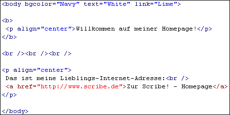

Willkommen bei Scribe!.
Dieses Dokument gliedert sich in Abschnitte, die auf die ersten Schritte mit Scribe! (angefangen mit dem "Willkommen" - Dialog) zugeschnitten sind. Sie können schrittweise vorgehen oder durch einen Klick auf die Links ein Thema anspringen.
Eine kleine Einführung in (X)HTML finden Sie » hier.
» Der "Willkommen" - Dialog
» Der Seiten - Assistent
» Die Eigenschaften der Seite
» Anzeigen der Seite in einem Browser
» Text eingeben und Hyperlinks
» Nachbearbeiten der Seite
Dieser erste Dialog fordert Sie zur Erstellung eines Projekts auf. Scribe! basiert auf dieser Art der Projektverwaltung. So ist es einfach, später die Daten organsiert auf einem » Web - Server abzulegen.
Geben Sie unter Projektname eine Bezeichnung für Ihr Projekt ein. Außerdem dürfen noch Projekt - Unterordner erstellt werden, um mehr Übersicht zu schaffen. Diese können aber auch später erstellt werden. Klicken Sie auf .
Mit wird zwar kein Projekt erstellt, dafür wird der Dateimanager angezeigt. Damit können Sie Internet - Dokumente in einem beliebigen Verzeichnis erstellen und bearbeiten.
Projekte können natürlich auch zu einem späteren Zeitpunkt angelegt werden.
Der Seiten - Assistent vereinfacht die Erstellung eines XHTML - Dokumentes. Er kann auch später über abgerufen werden.
Unter geben Sie einen Text ein, der im » Browser in der oberen Zeile angezeigt wird (so wie hier "Scribe! - Hilfe").
Im Feld sollten Sie Ihren Namen angeben.
umreissen die Themen Ihrer Seite. Die einzelnen Wörter sind durch Kommata zu trennen.
Eine kurze Inhaltsangabe Ihrer Seite in Sätzen schreiben Sie ins Feld .
Die Inhalte der Felder "Autor", "Schlüsselwörter" und "Beschreibung" werden in Form von » Metatags im (X)HTML - Dokument gespeichert. Metatags enthalten verschiedene Anweisungen für Browser und vor allem für Suchmaschinen.
Bestätigen Sie mit .
Dieser Dialog bezieht sich im Wesentlichen auf das Aussehen der Seite. Hier können die Farben für Hintergrund, » Links und normalen Text festgelegt werden. Außerdem besteht die Möglichkeit, ein Hintergrundbild zu definieren. Dieser Dialog ist später über zu erreichen.
Wählen Sie nun Farben für den Hintergrund, den Text und für einen normalen (Hyper-) Link aus, indem Sie auf die entsprechenden » Buttons klicken und eine Farbe bestimmen.
Wenn Sie damit fertig sind, bestätigen Sie mit .
Ihre Seite wird nun im Quelltext im Editor dargestellt.
Betrachten Sie nun die Seite in einem » Browser.
Klicken Sie dazu auf und wählen Sie aus der Liste einen Browser aus.*
Nun wird gefragt, ob die Datei gespeichert werden soll. Bestätigen Sie mit "Ja". Die Datei erscheint in der Dateiliste.
Sobald der Browser fertig geladen ist, wird Ihre Internet - Seite angezeigt. Immerhin schon etwas, aber noch ein bißchen textlos.
* Sollte die Liste leer sein, haben Sie vermutlich keinen Browser installiert oder Scribe! konnte keinen finden. Wenn der erste Fall zutrifft, durchsuchen Sie mal Ihre Shareware- und Heft - CD-Roms. Darauf befindet sich meist eine aktuelle Version der bekannteren Browser.
Haben Sie einen Browser auf Ihrem System installiert, rufen Sie den Options - Dialog unter auf. Unter dem Registerreiter "Browser" haben Sie die Möglichkeit, drei Browser zu definieren.
Der interne Browser ist nur vorhanden, wenn der "Microsoft Internet Explorer®" ab Version 4 installiert ist.
Wechseln Sie wieder zum Scribe! - Fenster. Plazieren Sie den Textcursor zwischen den beiden » Tags <body> und </body>.
Geben Sie dort z.B. den Text "Willkommen auf meiner Homepage!" ein.
Markieren Sie den Text und klicken auf den Button  der sich auf dem rechten oberen Paneel unter der Gruppe "Format" befindet. Der <b> - Tag wird vorne bzw. hinten angehängt, der die Schrift im » Browser fett darstellt.
der sich auf dem rechten oberen Paneel unter der Gruppe "Format" befindet. Der <b> - Tag wird vorne bzw. hinten angehängt, der die Schrift im » Browser fett darstellt.
Um die Überschrift zu zentrieren, benutzen Sie den » Button .
Plazieren Sie nun den Textcursor eine Zeile unterhalb der aktuellen Zeile. Klicken Sie 3 mal auf den Button unter der Gruppe "Allgemein", um 3 Zeilenumbrüche einzufügen.
Schaffen Sie sich mit der Enter/Return - Taste etwas Platz unterhalb der Zeilenumbrüche.
Geben Sie anderen Text ein, z.B. "Das ist meine Lieblings-Internet-Adresse:". Markieren Sie den Text und zentrieren Sie ihn ().
Plazieren Sie einen Zeilenumbruch hinter dem eingegebenen Text (), aber noch vor dem </p> - Tag. Zur optischen Verbesserung drücken Sie zusätzlich einmal die Enter/Return - Taste. Fügen Sie hier eine Internet - Addresse oder eine Beschreibung ein (z.B. "http://www.scribe.de" oder auch "Zur Scribe! - Homepage"). Markieren Sie die Adresse und klicken Sie auf  unter "Allgemein", um den Hyperlink - Dialog aufzurufen.
unter "Allgemein", um den Hyperlink - Dialog aufzurufen.
In dem Dialog geben Sie für eine Internet - Adresse an, in diesem Fall also "http://www.scribe.de". Bestätigen Sie mit . Der <a> - Tag wird voran- bzw. angehängt, der einen » Hyperlink beschreibt.
So, das müßte alles gewesen sein. Betrachten Sie Ihre Homepage jetzt im Browser mit .
Hier noch zur Kontrolle ein Blick in den Quelltext (der Quelltext wurde zur besseren Übersicht geordnet):

Ein besondere Eigenschaft von Scribe! ist die Möglichkeit, » Tags durch ihren jeweiligen Dialog nachzubearbeiten.
Wenn Sie z.B. eine andere Hintergrundfarbe einstellen wollen, klicken Sie einmal mit der linken Maustaste in den <body> - Tag.
Wählen Sie nun aus dem Kontextmenü (rechte Maustaste) den ersten Eintrag aus oder benutzen Sie den » Shortcut Strg+F3.
Der Dialog mit Einstellmöglichkeiten der Seiteneigenschaften wird geöffnet und die vorhandenen Attribute werden zugewiesen. Nehmen Sie die gewünschten Änderungen vor. Mit werden die geänderten Attribute dem Tag zugeordnet.
Diese Vorgehensweise klappt mit jedem Tag, der über einen Dialog einfügbar ist.
Viel Spaß.